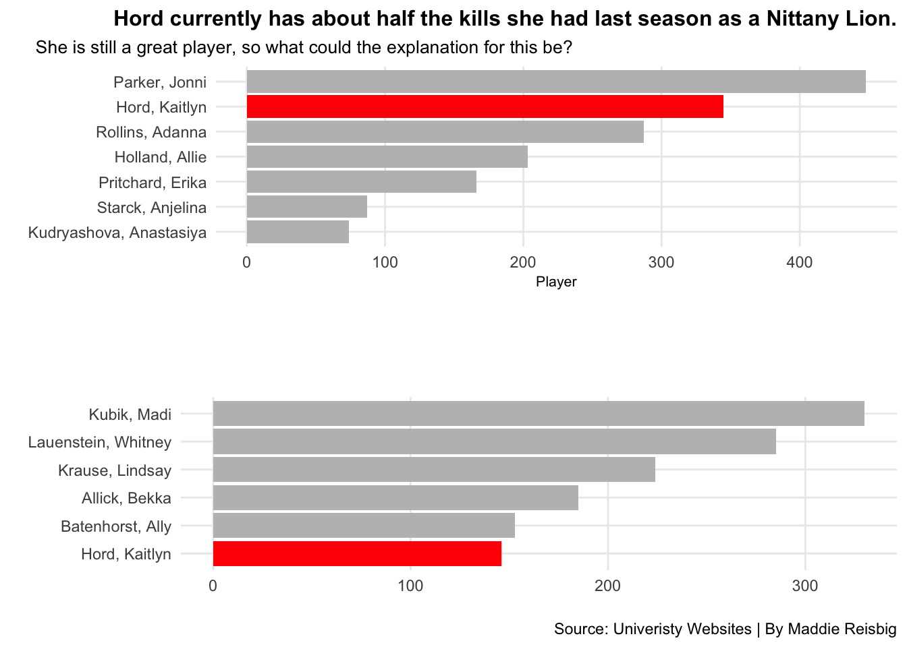
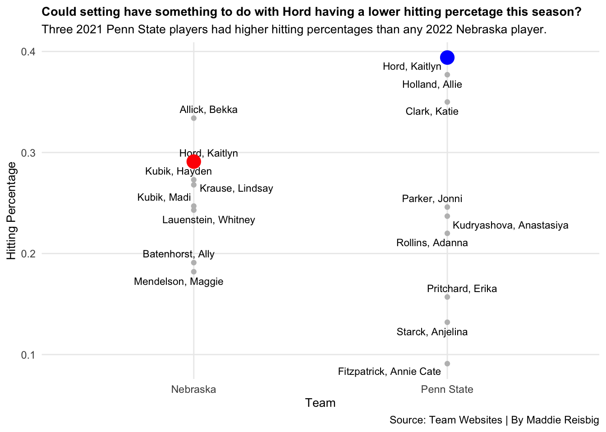
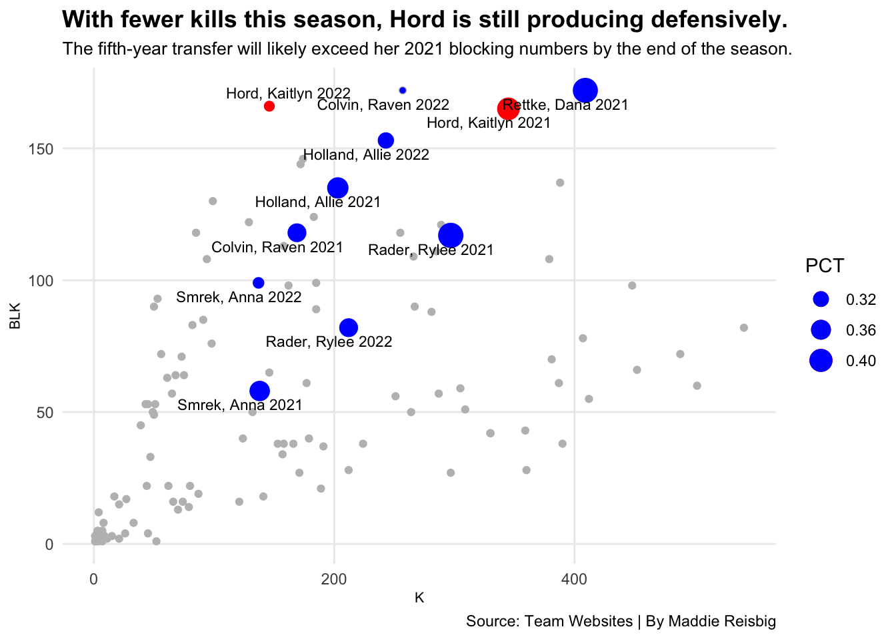

Is Kaitlyn Hord the Most Underutilized Player in NCAA Volleyball?
bigten
pennstate
nebraska
volleyball
Author
Maddie Reisbig
Published
December 4, 2022
Surely, every Nebraska Volleyball fan can remember the day that Kaitlyn Hord decided to use her final year of eligibility as a Cornhusker. The 6’4” middle blocker from Lexington, Kentucky spent her previous four seasons at Penn State before deciding to spend her last season at Nebraska. While at Penn State, Hord was a three-time All-American and played a big role on the team.
Coming into the 2022 season, Nebraska needed more depth and experience at the middle blocker position. Kaitlyn Hord was the perfect player to step into that role for Nebraska. However, this season has been quite different than her seasons at Penn State statistically. She has not carried as much of an offensive load. At Penn State, Hord was second on the team in kills, only behind six-rotation, right side hitter, Jonni Parker. This season, she ranks sixth in total kills for the Cornhuskers.
Code
library(tidyverse)library(cowplot)library(ggrepel)library(ggbeeswarm)bigten <-read_csv("bigtenvb.csv")players <-read_csv("bigtenvb.csv")set.seed(1234)pennstatenebraska <- bigten %>%filter( Position =="MB"| Position =="OH"| Position =="RS"&is.na(Team) ==FALSE, Team =="Nebraska"& Season =="2022"| Team =="Penn State"& Season =="2021" )khnebraska <- pennstatenebraska %>%filter(Player =="Hord, Kaitlyn"& Season =="2022")khpennstate <- pennstatenebraska %>%filter(Player =="Hord, Kaitlyn"& Season =="2021")newplayers <- players %>%filter(BLK >0, K >0) %>%mutate(PlayerSeason =paste(Player, Season))KH <- newplayers %>%filter(Player =="Hord, Kaitlyn")othermiddles <- newplayers %>%filter(Player %in%c("Rettke, Dana", "Holland, Allie", "Smrek, Anna", "Colvin, Raven", "Rader, Rylee"))psu21 <- bigten %>%filter(Team =="Penn State", K >50, Season =="2021") %>%group_by(Player)pennstatetotal <- psu21 %>%top_n(5, wt=K)nebraska22 <- bigten %>%filter(Team =="Nebraska", K >50, Season =="2022") %>%group_by(Player)nebraskatotal <- nebraska22 %>%top_n(5, wt=K)khpennstate <- bigten %>%filter(Player =="Hord, Kaitlyn", Season =="2021")khnebraska <- bigten %>%filter(Player =="Hord, Kaitlyn", Season =="2022")bar1 <-ggplot() +geom_bar(data=pennstatetotal, aes(x=reorder(Player, K), weight=K), fill="grey") +geom_bar(data=khpennstate, aes(x=reorder(Player, K), weight=K), fill="red") +coord_flip() +labs(title="Hord currently has about half the kills she had last season as a Nittany Lion.", subtitle ="She is still a great player, so what could the explanation for this be?", x="", y="Player", caption ="") +theme_minimal() +theme(plot.title =element_text(hjust =1, size =12, face ="bold"),axis.title =element_text(size =8), plot.subtitle =element_text(hjust =-1.25, size=10), panel.grid.minor =element_blank() )bar2 <-ggplot() +geom_bar(data=nebraskatotal, aes(x=reorder(Player, K), weight=K), fill="grey") +geom_bar(data=khnebraska, aes(x=reorder(Player, K),weight=K), fill="red") +coord_flip() +labs(title ="", subtitle="", x="", y="", caption="Source: Univeristy Websites | By Maddie Reisbig") +theme_minimal() +theme(plot.title =element_text(size =16, face ="bold"),axis.title =element_text(size =8), plot.subtitle =element_text(size=10), panel.grid.minor =element_blank() )plot_grid(bar1, bar2, ncol=1)

My first thought when seeing these numbers instantly goes to setting. Not only have the 2022 Cornhuskers seen every combination of setters possible, but they are also mostly running a 6-2. This may have a part in why Hord is getting fewer kills this year. In a 6-2 the setter always has a third option in the front row and does not have to force middle as much. Last year, the Nittany Lions ran a 5-1 with setter Gabby Blossom. Running a 5-1 meant that for three rotations, Blossom only had two options, one of which was a middle.
I wanted to look closer to see if it is truly setting that is causing Hord’s numbers to be lower this year. An easy way to see if setting has a role in it is by looking at hitting percentages. I assumed that in general, Nebraska’s 2022 hitting percentages would be lower than Penn State’s 2021 hitting percentages.
Code
ggplot() +geom_beeswarm(data=pennstatenebraska,groupOnX=TRUE,aes(x=Team, y=PCT), color="grey") +geom_text_repel(data=pennstatenebraska, aes(x=Team, y=PCT, label=Player), size=3) +geom_beeswarm(data=khnebraska,groupOnX=TRUE,aes(x=Team, y=PCT), color="red", size=5) +geom_beeswarm(data=khpennstate,groupOnX=TRUE,aes(x=Team, y=PCT), color="blue", size=5) +labs(title="Could setting have something to do with Hord having a lower hitting percetage this season?", subtitle="Three 2021 Penn State players had higher hitting percentages than any 2022 Nebraska player.", x="Team", y="Hitting Percentage", caption="Source: Team Websites | By Maddie Reisbig") +theme_minimal() +theme(plot.title =element_text(size =10.25, face ="bold"),axis.title =element_text(size =10), plot.subtitle =element_text(size=10), panel.grid.minor =element_blank() )

As you can see from this beeswarm chart, Penn State 2021 in general had higher hitting percentages than Nebraska 2022. One really noticeable aspect of this chart is the middles’ hitting percentages. Allie Holland, Katie Clark, and Kaitlyn Hord all had higher hitting percentages for Penn State last year than both Bekka Allick and Kaitlyn Hord do this year for Nebraska. It is also important to point out that Kaitlyn Hord hit nearly a full point higher last year. After looking at this chart, I think it is safe to say that setting may be having an impact on the attacking statistics this year for the Cornhuskers.
The setting position for Nebraska this year has been anything but consistent. It has been plagued by injuries, whereas, the setting was consistent last year for the Nittany Lions with Blossom at the helm. Hames, Orr, and Evans have all had great moments running the offense and have all shown that they can excel in the position, but the constant change and hitters having to adjust, I believe, has made it harder for hitters to get into a rhythm.
So, I looked a little further to see if there were similar trends on other Big Ten teams who qualified for the 2022 NCAA Tournament. Those teams include: Wisconsin, Nebraska, Minnesota, Ohio State, Penn State, and Purdue. I made a bubble chart of kills and blocks, with the weight of the bubbles being hitting percentage. I assumed that Kaitlyn Hord would have around the same number of blocks this season and last but that she would have fewer kills this season.
Code
ggplot() +geom_point(data=newplayers, aes(x=K, y=BLK), color="grey")+geom_point(data=KH, aes(x=K, y=BLK, size=PCT), color="red") +geom_point(data=othermiddles, aes(x=K, y=BLK, size=PCT), color="blue") +geom_text_repel(data=othermiddles, aes(x=K, y=BLK, label=PlayerSeason), size=3) +geom_text_repel(data=KH, aes(x=K, y=BLK, label=PlayerSeason), size=3) +labs(title="With fewer kills this season, Hord is still producing defensively.", subtitle="The fifth-year transfer will likely exceed her 2021 blocking numbers by the end of the season.", caption="Source: Team Websites | By Maddie Reisbig") +theme_minimal() +theme(plot.title =element_text(size =13.5, face ="bold"),axis.title =element_text(size =8), plot.subtitle =element_text(size=10), panel.grid.minor =element_blank() )

I took some of the best middles in the country both this season and last season and highlighted them in this bubble chart. 2021 Kaitlyn Hord’s stats are very impressive, as she is only slightly behind Wisconsin star, Dana Rettke. Slightly to the left of where Hord was last year is where she is this year. She has a similar amount of blocks, but far fewer kills. In fact, her former teammate, Allie Holland, has since surpassed her in kills.
If you go to a game at the Bob, you might hear people yelling to set the middle. After comparing Kaitlyn Hord’s stats from Penn State in 2021 and this year, it is obvious that she has the potential to be an All-American again, but is possibly just being underutilized. As the Cornhuskers head to Louisville for regionals, they will hopefully find a way to get their three-time All-American middle blocker more involved in the offense.